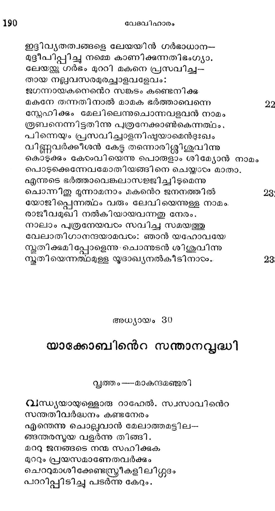
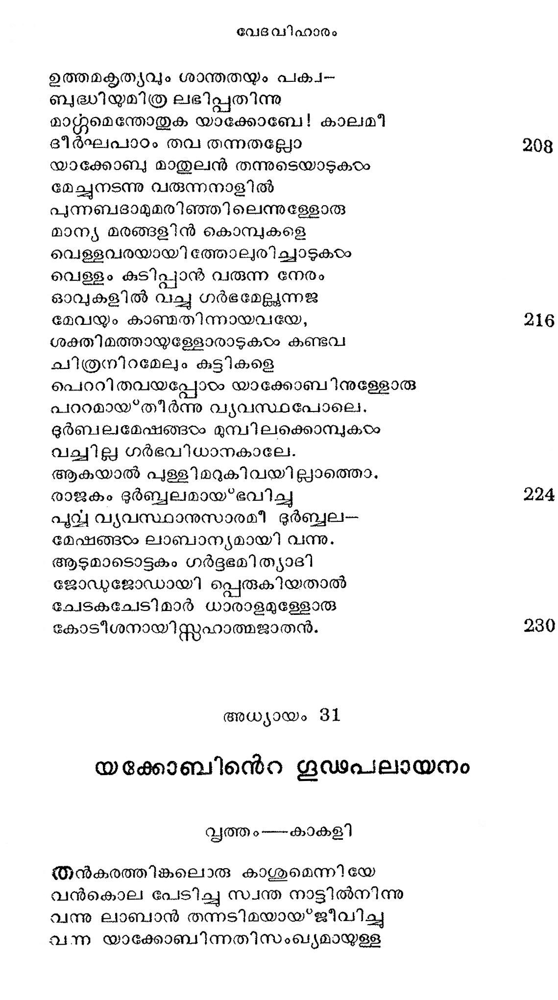

യാക്കോബിന്െറ സന്താനവൃദ്ധി
ത്തം --മാകുന്നദമഞ്ജുരി
വന്ധ്യയായുള്ളൊരു റാഹേല്. സ്വസാവിനന്െറ
സന്തതിവര്ദ്ധനം കണ്ടനേരം
എന്തെന്നു ചൊല്ലുവാന് മേലാത്തമട്ടില-
ങ്ങന്തരസ്മയ വളര്ന്നു തിങ്ങി.
മററു ജനങ്ങടെ നന്മ സഹിക്കുക
മുററും പ്രയസമാണേതവര്ക്കും
ചെററുമാശിക്കേണ്ടന്ത്രീകളി ലിശഗ്ശൂദം
പററിപ്പിടിച്ചു പടര്ന്നു കേറും.

ഈര്ഷ്യാധികത്വേന ബോധരഹിതയായ
ധാര്ഷ്യമൊടാത്മഭര്ത്താവിനഗ്രേ
ചെന്നു റാഹേലുരചെയ്തിതു: മക്കളെ
തന്നെനിക്കെന്നുടെ ചിത്തശല്യം
നീക്കായ*കില് നിന്നുടെ മുന്പില് മരിപ്പതി--
ന്ുടംക്കരളിങ്കലുറച്ചു ഞാനും.
യാക്കോബിന്നല്ലൊരു മര്ത്യന്നുപോലുമ--
ശക്യമായ്ള്ളോരി ശ്ലാഠ്യവാദം
സാധിപ്പതിന്നോ കഴിയുന്നു; സ്്രീകടെ
ചേതസ്ത്ണിന് മാതിരിയേവമത്രേ.
അമ്പിളിക്കായിക്കരയുന്ന പൈതലും
പെണ്പിറന്നോളം സമാനമല്ലൊ.
ഇച്ഛ സാധിക്കണമെന്നതല്ലാ തവ-
ക്ക്ചുമായ്ള്ള വിവേകമില്ല.
ഇസ്്റഫ പുത്രനീവാക്കും വധുമുഖ--
തസ്്റലായ* നിന്നോരരിശ വായ്'പും
കണ്ടപ്പോളെന്തു മറുപടി നല്കിയി-
ശ്ശ ശാന്തി വരുത്തിവയപു
എന്നു ചിന്തിച്ചവടം തന്നോടുറക്കവേ
മന്യവാന്നോതിനാന് പാദഹാരി.
ഈശനിരുദ്ധമാം ഗര്ഭഫലം മാമ--
കാശയംപോലെ നിനക്കു നല്കാന്
ഞാനൊരു ദൈവമാണെന്നോ നിനക്കുള്ളില്
ഹീനവിചാരമുദിപ്പതിപ്പോഴം.
ഉത്തരമോതിനായം സത്യമതെങ്കില്ം
ഭൂത്ൃയയാം ബില്ഹ വഴിയെനിക്കു
സന്തതിയുണ്ടാവാന് തന്ന വിധത്തില് നാ--
യന്തര്ഗ്ഗൃഹത്തില് വരികയിന്നാടം
ഇപ്രാത്ഥന മവനംഗീകരിക്കയാല്
ക്ഷിപ്രമുളവായി പുത്രനേകന്
ദൈവമെനിക്കായി ന്യായം നടത്തിയെന്
ഭവ്യാത്ഥമായോരപേക്ഷയി പ്പോഠം
സാധിച്ചുവെന്നോതി റാഹിലപ്പുത്രന്നു
മോദിച്ചരുളി ടദാനെ?ന്ന നാമം.
പിന്െയുംബില്ഹാ പ്രസവിച്ച മാത്രയില്
ധന്ൃയയാം റാഹേലരച്ചിവണ്ണം:
എന്സോടരിയോടു പോര് പൊരുതിങ്ങനെ
വന്ജയം നേടിക്ക താത്ഥയായേന്.
ആയതുമൂലമി പ്പൈതലിന്നേകം ഞാന്
മായമെന്നെ “നപ്യാലീ ?തി നാമം.
പുത്രപ്രസവമാം ഭീമരണത്തില് തന്
ശതര്രൂുവാം സോദരി വീണിടാതെ
കാലൂന്നി നില്പതു കണ്ടസമയത്തു
മാലുണ്ടായല്പം ലെയായ്ക്കുമപ്പോഴം
സന്ദേര്യം, ഭർത്തുവാത്സല്യ മെന്നീരണ്ടു
വന്തരമായ്ധം കയ്യിലേന്തി
വാനം തൊടുമാറുയര്ന്നു നിന്നുളെളാരു
മാനിനിയാകിയ റാഹിലയേ
സന്തതി യെന്നുളെളാരമ്പിനാല് വീക്സാന് ത-
ന്൬ന്തരംഗത്തില് കരുതിയിട്ടും
ബില്ഹാവഴി രണ്ടുമക്കളേ ബ*ഭത്താവു
നല്കുകയാല് പരിക്സിഷ്ടയായി
സംഖ്യയാലെങ്കിലും തന്പ്രതിദ്വന്ദിയേ-
യങ്കപ്പോര് തന്നിന് നിലര്ത്തടിപ്പാന്
റഹില തന്നുടെ നവ്യനയവഴി
യാഹവധര്മ്മമായ* കണ്ടടനേ
സില്ലയാം തന്നുടെ ഭൂത്യയെ ഭര്ത്താവി-
ന്നല്പലലലോചന നല*കിനിന്നാടം.
മുട്ട പൊരുന്നവച്ചായതില്നിന്നു നല്--
ക്കൂട്ടിയിറങ്ങുവാന് കാത്തിരിക്കും
മട്ടില് നിജദാസി പെററുകാണഞ്മാന് ലേയാ
ദുഷ്മിയിമന്്കാതെ കാത്തിരുന്നു.
പൂര്ണ്ണമാം കാലത്തു പെറെറാരു പുരരനേ
പൂര്ണ്ണ സയഭാഗ്യയാം സില്ലതാനും
*ക്രപ്പി ?തിനാമം കലര്ന്നൊരു കമ്പനി-
യത്ഭുതയന്ത്ര നളികമൊന്നു
തീര്ത്തുകൊടുക്കി ലുണ്ടാവതിലത്യന്ത
ചിത്തമോടത്തോട് യോധയാകും
ലേയാ സമാറ്റ്ാദി ച്ചോതിനാളീടദ്ദശം
ആയാതി യോധനിവഹ ഏകഃ
എതാദൃശ വചനാത്ഥലാനുസാരമായ"
ഗാദെന്നു നാമം ശിശുവിനേകി
പിന്നെയും സില്ല പ്രസവിച്ചൊരു മകന്
തന്വംഗിലേയജ്കു ലഭ്യമായി
സ്ത്രീകളെന്നേ മഹാഭാഗ്യവതിയെന്നു
സാകൂതം കീര്ത്തിക്കുമെന്നു ചൊല്ലി
ഭാഗ്യമെന്നത്ഥം വരുന്നൊരാശേരിതി
യോഗ്യമാമാഖ്യ കൊടുത്തുകൊണ്ടാടം
ഗോധുമ തര്ത്തന കാലത്തു രൂബനാ-
മാദിമപത്രന് വയലിലേക്കു
പോയപ്പോഴം കണ്ടങ്ങു ഭൂദായ*പ്പഴക്കല--
യായതിന് വീര്യമറിഞ്ഞുടനെ
സവീയമാതാവിന് പ്രസവബന്ധത്തിനു
മായമകുന്ന മരുന്നാകയാല്
ആയവാഠം തന്െറ സമീപത്തു കൊണ്ടുവ
നനായളവായതു കണ്ട റാഹേല്
ലേയയോടോതിനാടം നിന്മകന് തന്നുടെ
ഭുദായ്പ്പഴത്തില് കുറെയെനിക്കു 86
നല്കുക ഭത്താവിനെ നുരതത്തിനു
നല്കിടാമായതിന് നിഷ്കൃതിയായ*
ശ്രുത്വാ കനിഷ്ഷതന് വാക്കുകളഗ്രജാ
ദത്വാഫലത്തിലൊരംശമുടന്
ഗത്വാ പതിയുടെ മുന്പില് പരമാത്ഥ -
മുക്ത്വാ നിജാന്തര് ഗൃഹത്തിലേതം
കൊണ്ടുപോയ ഗര്ഭം പുനരപി കൈക്കൊണ്ടു
വണ്ടാര്കഴലികൃതാത്ഥയായി. 104
ഇങ്ങനെയഞ്ചാം മകനെ പ്രസവിച്ചു
മംഗളഗാത്രിയുരച്ചുകൊണ്ടാരം:
മദാസിയേ ഞാന് പതിക്കു കൊടുക്കയാ-
ലദാതവേതനമേകി ദൈവം.
തല്ക്കാരണമവ ളി “സ്റ്റാഖറെ ന്നുള്ള
നല്ലാളം നാമം ശിശുവി നേകി
ആറാമതുമൊരു പുത്രന് ജനിച്ചുടന്
കൂറിലേയാവിദഭം മല്തിക്ക 3114
ആറുസുതരേ സവിക്കയാലെന്നോടു
കൂറിയന്നായവന് ചേര്ന്നുവാഴും
ഈ വിധം ചൊന്നു സെബുലുനഭിധാന
മേകിയതിന് പിന്പു പുത്രിയായി
ഭീനയെന്നുള്ളോരപത്യമുണ്ടായ൦നിജ
ദീനത തീര്ന്നു തെളിഞ്ഞു ലേയാ
ഈവിധം ലേയയും ദാസിയും സന്താന--
ലാഭപ്രമോദപ്പെരുംകടലില് 120
നീന്തിയടിച്ചു കളിച്ചു പുളല്ല വി -
ശ്രാന്തിയില്ലാതെ മടിച്ചി ടുമ്പോടം
റാഹേലപത്യമുഖമൊന്നു കണ്ടു ത-
ന്നാകല ചിത്ത ശമംവരുത്താന്
ഭാഗ്യമില്ലാതെ വലഞ്ഞു പലപണി
നോക്കിയിട്ടം ഫലം നാസ്തിയായി.
ദീര്ഘനാരം തന്നഭിമാന പദവുമ--
നര്ഘമാം നിക്ഷേപ വസ്തുവുമായ* 128
മാനീച്ചിരുന്നോരു സൌന്ദര്യമീയവ-
മാനത്താല് ഹീനമായ്ക്കണ്ട റാഹേല്.
കോമളമായ കളേബരത്താലെന്തൂ?
ഭാമിനിയാളനപത്യയായാല്.
ശാഠ്യംകുറഞ്ഞു സ്വസാവുമായുള്ള പോ--
രാട്ടം കുറഞ്ഞു മടുപ്പുമൂലം
സ്വാന്തപ്രശാന്തപാകമനസ്ഥിതി
വന്ധ്യക്ക കാലക്രമേണയുണ്ടായ്. 186
ടദൈവത്തിലല്പമായ* ഭക്തിയുദിച്ചു ഭുർ-
ട്രൈവാക്രമണം സഹിക്കറമുലം.
തീയിഅ പഴുത്തൊരിരുമ്പു പോലെ മയ
മായ ഹൃദയമുടയവളാം
റാഹിലേയി പ്പോഠം കടാക്ഷിച്ചവളടെ
ശോകവിദ്ധ്വംസനം ചെയ്തിടുവാന്
സയധ്യേശന് വന്കൃപാവര്ഷം ചൊരികയാൽ
നിവിളംബമവരം ഗര്ഭിണിയായ. 144
എന്നുടെ സോദരിയാകിയ ലേയയാടം
എന്മേല് ദയാഹീനമിട്ടതാകും
നിന്ദയാകുന്ന കുരിമ്പടം സവ്വേശ-
നിന്നിതാ മാററിക്കളഞ്ഞ ടുന്നു
എന്നുരച്ചിട്ടവന് ജാതനാം പുത്രനു
ചൊന്നിതു യോസേപ്പെന്നുള്ള നാമം.
യാക്കോബ്യ സ്വദേശഗമനത്തിനു* അനുവാദം ചോദിക്കുന്നതു
ഏവം കുടുംബക വിസ്തൃതി വന്നപ്പോടം
സവാവാസകാംക്ഷ കരേറിയുള്ളില് 12
ഓതിനാന് യാക്കോബ) ലാബാനോടിവ്വണ്ണം:
പോവാന് വിടുകെന്നെ ജന്മനാട്ടില്
ഭാര്യമാർ മക്കളിവരുമായൊന്നിച്ചെ
ന്നാര്യമതെ! യിവന് പോയ*വരട്ടെ.
താവക സേവ നടത്തിയമാതിരി
ഞാന് വിശേഷിച്ചുപറയണമോ മ
ചൊല്ലിനാൻ ലാബാനിതിന്നു മറുപടി
തെല്ലു ദയ നിനക്കുണ്ജലരില് 160
ഉണ്ടെങ്കില് പോകൊല്ല വേണ്ടും പ്രതിഫലം
ഖണ്ഡിതമായ നിനക്കേകിടാം ഞാന്.
നിന്നിമിത്തം പരനെന്നെയന൯ുഗ്രഹി --
ച്ചെന്നതു ബോദ്ധ്യമാണിന്നെനിക്കും

യാക്കോബുരച്ചു; ഞാന് വന്നിടും മുന്പു നിൻ
പക്കലിരുന്നോരു മേഷവ്വന്ദം
അല്പമെന്നാലും മഹത്തമമായവ-
യിപ്പോടം പെരുകിയിരിപ്പതില്ലേ?
എന്നുടെ കാലെവിഴടുന്നിയവിടമ-
തൃന്നതനൈശ്വര്യപൂര്ണ്ണമാക്കി.
എങ്കിലുമെന്െറ സ്വകീയ നിലയന-
മംഗളാത്ഥം കരുതുന്നതെപ്പോടം ?
സ്വന്തഭവനവിചാരമററുള്ളവ--
നന്ധനെന്നല്ലേ പറകവേണ്ടു?
കാലംകടന്നു പരിശ്രമിക്കാവുന്ന
കാലവും പോയി നിന് സേവനത്തില്.
വാര്ദ്ധക്ൃകാലത്തു തേടിയാല് വാശ്ലതും
സിദ്ധിക്കയെന്നുതു സാദ്ധ്യമാമോ ?
യയവനകാലത്തു നേടണം വാര്ദ്ധക്യ
ഭവ്യതയ്ള്ള നിലയിലെത്താന്.
രാത്രിയില് വേണ്ടതു സമ്പന്നമാക്കണം
മര്ത്യന് പകല്സമയത്തുതന്നെ.
നല്ല വസന്തത്തിലല്യൊ ഷ്ഠംപ്പദം
ഫുല്പസുമമധു ശേഖരിപ്പൂ
ആകയാലെന് ഭവനത്തിനു വേണ്ടി ഞാ-
നാകുന്ന സുശ്രമം ചെയ്ത വേണ്ടെ?
ലാബാന് പറഞ്ഞിതിന്നെന്തു തരേണം ഞാന്?
താവകസേവന നിഷ്ക്രയമായ*
ചൊന്നിസ്റ്റഹാത്മജന് യാതൊന്നും വേണ്ടിനി-
ക്കിന്നീസ്തവാക്ക നീ സ്വീകരിക്കില്
പള്ളി മറുകിവയ്ള്ള മേഷങ്ങളും
ചെമ്മരിയാട്ടില് കറുത്തവയും
കോലാടുവര്ഗ്ഗത്തില് ചിത്രവര്ണ്ണങ്ങളം
മാമക വേതനമായിടട്ടെ.
ഭിന്നവര്ണ്ണങ്ങളാമാടുകളെന്നജ--
വൃന്ദത്തില് കാണുകയെന്നിരുന്നാല്
താസ്ത്ര്യമെന്നില് ചുമത്തുക ഞാനതു
മാത്സര്യമെന്നിയെ സംവദിക്കാം.
ഈദൃശമായ നിയമം പ്രസ്തകരി-
ചാടുകളെയവര് വേര്തിരിച്ചു.
വേതനമായുള്ളോരാടുകളെ യാത്മ-
ജാതരെയേല്വിച്ചയാകുബാഖ്യന്
മൂന്നുദിനമകലത്തു മേയിച്ചു സ-
ജീര്ണ്ണത തമ്മിൽ വരാതിരിപ്പാന്.
ഉത്തമകൃത്യവും ശാന്തതയും പക്വ--
ബുദ്ധിയുമിത്ര ലഭിപ്പതിന്നു
മാന്റുമെന്തോതുക യാക്കോബേ! കാലമീ
ഭീര്ഘപാഠം തവ തന്നതല്ലോ
യാക്കോബ മാതുലന് തന്നുടെയാടുകഠം
മേച്ഛനടന്നു വരുന്നനാളില്
പുന്നബദാമുമരിഞ്ഞിലെന്നുള്ളോരു
മാന്യ മരങ്ങളിന് കൊമ്പുകളെ
വെള്ളവരയായിത്തോലുരിച്ചാടുകയം
വെള്ളം കുടിപ്പാന് വരുന്ന നേരം
ഓവുകളില് വച്ചു ഗര്ഭമേലുന്നജ
മേവയും കാണ്മതിന്നായവയേ;,
ശക്തിമത്തായുള്ളോരാടുകയം കണ്ടവ
ചിത്രനിറമേലം കുട്ടികളെ
പൊററിതവയപ്പോടം യാക്കോബിനുള്ളോരു
പററമായ* തീര്ന്നു വ്യവസ്ഥപോലെ.
ദുര്ബലമേഷങ്ങരം മുമ്പിലക്കൊമ്പുകയം
വച്ചില്ല ഗര്ഭവിധാനകാലേ.
ആകയാല് പുള്ളിമറുകിവയില്ലാത്തൊ.
രാജകം ഭുര്ബ്ബലമായ*ഭവിച്ചു
പൂവ്വ വ്ൃയവസ്ഥാനുസാരമീ ദുര്ബ്ബല-
മേഷങ്ങഠം ലാബാന്യമായി വന്നു.
ആടുമാടൊട്ടുകം ഗര്ദ്ദഭമി ത്ലാദി
ജോഡുജോഡായി പ്പെരുകിയതാല്
ചേടകചേടിമാര് ധാരാളമുള്ളോരു
കോടീശനായിസ്റ്റഹാത്മജാതന്.
